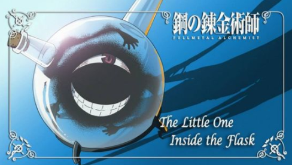
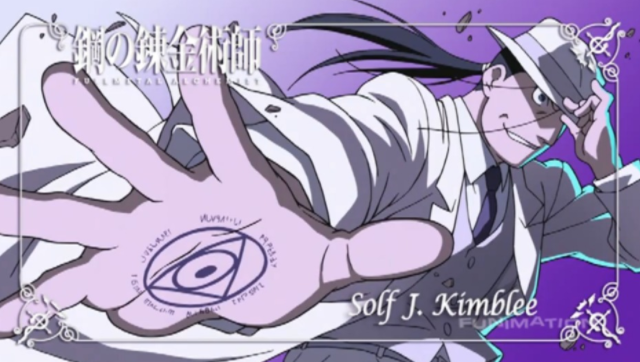
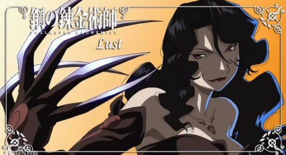
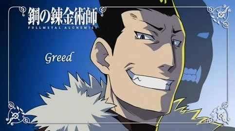
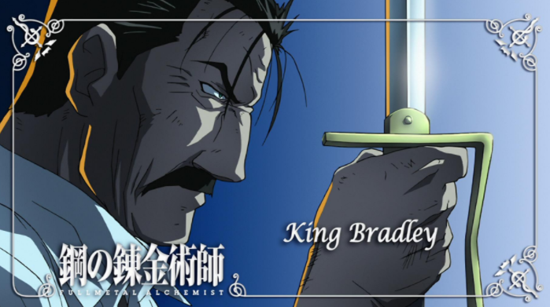
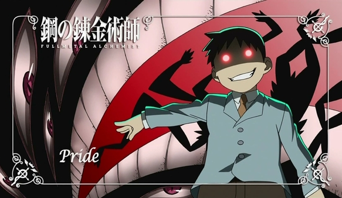
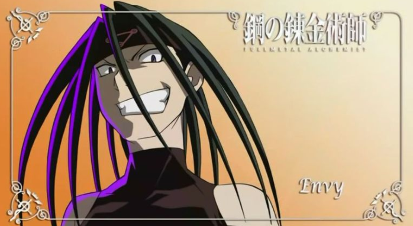

反派角色
1.瓶中小人 藉著馮•霍恩海姆的血液製造出來生命體。本體是只有口和單眼的一團黑球；在獲得賢者之石後外表與霍恩海姆一模一樣。指揮並支配人造人的幕後黑手，是故事中連串不幸事件的真正源頭。 原本是真理之門內中「真理」實體的一小部分，由遠古克塞魯克塞斯的鍊金術師抽取奴隸「23號」（馮•霍恩海姆）的血液做實驗，在燒瓶中被造出來，擁有一切學問。後來克塞魯克塞斯國王向他求問長生不老的方法，他便教國王在全國範圍挖掘鍊成陣，並在五個地方進行大屠殺以畫下「血之紋章」；實際上是計劃以全國國民生命為代價，把自己和霍恩海姆一起鍊成具人類外貌的賢者之石，藉此脫離燒瓶。憑著霍恩海姆的血液訊息獲得與他相同的外表，二人體內各有半數克塞魯克塞斯國民靈魂。 然而在這之後卻並不滿足於離開燒瓶，他希望成為神一班的存在，因此建立了雅美斯多里斯，開啟他不為人知的陰謀。

2.金布里 性格殘忍、冷血、無情，為求目的不擇手段，但非常佩服能恪守自己原則的人，是以對愛力克兄弟、溫莉雙親等都予以肯定。在伊修瓦爾殲滅戰中屢立攻勳，但為私吞賢者之石，殺死供給他賢者之石的五名上級軍官滅口，被關在第五研究所旁的中央監獄中。因高層的命令而被釋放，接受人造人一方的命令，要殺死斯卡並找尋可能已逃跑的馬可醫生而來到北部。 聲稱自己主要是因為人造人能提供給他發揮的平台才加入，但同時亦希望透過幫助人造人完成計劃，見證人類和人造人最終對決的勝負。在追捕斯卡時因愛力克兄弟等人作梗而失敗；但成功煽動德拉古馬軍進攻布利古斯要塞，藉著進攻方的犧牲畫出國土鍊成陣最後一個「血之紋章」。 之後奉命殺死潛伏中央的伊修瓦爾人以破壞斯卡的計劃，在「約定之日」前往中央市郊救出普萊德，但之後聯合普萊德與阿爾戰鬥時，被前部下海因凱爾乘隙攻擊重傷垂危，之後被普萊德吞噬。在愛德與普萊德最終對決失利，將要被侵佔身體時，認為普萊德想放棄人造人的尊嚴苟活在人類軀體中「違反他的美學」，出現在普萊德的靈魂暴風雨中加以阻止，最後在愛德打倒普萊德時消失。

3.拉斯特 唯一女性外觀的人造人，代表七原罪中的色慾，認為人類是一種愚蠢的生物。化名索拉莉絲接近哈博克少尉想藉以得到相關情報，但最後在第三研究所內被馬斯坦古燒死。

4.古立德 以人體為容器注入「貪婪」的賢者之石，成為追求世上的一切，包括財富、權力、女性等「貪」的本質的人造人，帶領著一群手下獨自行動。被稱為「最強之盾」，盾牌全開時全身覆蓋一層由「碳」組成的物質防護，能抵擋任何種類的攻擊；缺點是無法同時進行再生與變硬。口頭禪是：「世上無事是不可能發生的。」 於一百年前因希望擺脫父親大人而背叛出走。聽說阿爾的靈魂附著於盔甲，於是擄來研究想獲得長生不老的生命；結果被前來南部視察的大總統（拉斯），以拯救愛力克兄弟為由，率隊攻入其根據地「惡魔之巢」酒吧，抓他回去給父親大人處置。因拒絕再次歸順，遭還原成液體般的靈魂，被父親大人喝下。後來父親大人又把「強慾」的賢者之石由姚麟臉部傷口注入他的血液中，使姚麟成為新的古利德。新的古利德雖然與拉斯一樣由人變成，但擁有再生能力。最初已忘掉前生的事情，完全與新的一樣，順服父親大人。但後來因為殺掉自己的舊部彼得而恢復記憶，與拉斯決鬥不敵後再次叛逃。 跟愛德遇上後再次組隊，在約定之日屢戰拉斯及父親大人。然而最後還是被父親大人重新吸收回去，為了保護姚麟，不得已對他說出生平唯一的謊言，把身體還給他。回到父親大人肉體後，把其碳化而遭父親大人抹殺，但是臨走時帶著實現願望（擁有互相支持的同伴）的滿足，笑著消失。是原作中「七大原罪」裡唯一一個背叛父親大人的，亦是最後一名消失的人造人。

5.拉斯 代表七宗罪中的憤怒，登場時大概六十歲左右，也是所有人造人當中唯一會變老的。擁有「最強之眼」，可以看見物體動作的瞬間；體能超越人類，同時也是劍術高手。 公開身份為大總統金格•布拉德雷，自幼以「大總統候補」的身份和其他候補一同在秘密訓練所接受「大總統訓練」。成年後被注入代表「憤怒」的賢者之石，成為人造人，並被授名為「金格•布拉德雷」，當上大總統。因為由人類直接改造，和正常人一樣會衰老，受傷後也無再生能力，死後肉體依然存在而不會消失。 幕後一直以總統身份活動，配合父親大人開闢國土鍊成陣並到處殺戮；為保護「人柱」多番維護愛力克兄弟。因為武功高強，幾乎是整套作品裡最厲害的人。曾以一人之力擊倒古利德及其合成獸同伴們，將古利德生擒去見父親大人。即使被清國蘭芳及姚麟圍攻仍不落下風，甚至能傷倒二人。被普萊德質問為何放過對手時，回答是避免影響大局並想從中取樂。 在約定之日，在古拉曼設計下，回程時鐵路橋墩被炸而下落不明；然而還是成功逃生並回到中央市。憑一人之力對抗帕克尼亞、胡爺爺及古利德（姚麟）三人。最終帕克尼亞、胡爺爺陣亡，拉斯則負傷跌進護城河中，最強之眼亦被姚麟破壞。潛回地底之後制服馬斯坦古，使他被普萊德強行打開真理之門。及後獨自一人對陣斯卡，被斯卡以「分解」的右手擊斷雙臂，傷勢過重而死，斯卡亦身負重傷。死前對自己一生並非被父親大人完全控制感到坦然，亦對自己選擇的妻子非常自豪，指自己不用對她留下任何遺言，因為「王的妻子就會有一定的素質」。

6.普萊德 原作中外表為小孩，是首位被父親大人製造出來的人造人，因此原形類似其本體，力量亦凌駕於其他人造人之上。 在漫畫版中第71話正式登場，化身為大總統的養子傑利姆•布拉德雷（英語：Selim Bradley，日語：セリム・ブラッドレイ）。軍中以霍克愛中尉最先發現他的身份。父親大人製造「傲慢」是為了監視其他人造人和歷屆當權者（以當權者養子的身份），以及守衛國土鍊成陣的隧道。只要有影子的地方就可以出現，通過影子控制其他傀儡和攻擊，甚至用影子吞噬其他人（如庫拉多尼和金普利）並獲得他們的特殊能力。缺點是在無影子的情況下只能躲在無攻擊能力的容器——人類小孩形狀的身體裡，所以「絕對光明」（照明彈）和「絕對黑暗」（密不透光的空間）成了他的弱點。其原形只有在國土鍊成陣的圓環隧道及中央區中心，才能離開人型容器活動。 在「約定之日」進行了人體鍊成，強行讓馬斯坦古一起通過真理之門，使用作攻擊與防禦的影子「觸手」消失，也令人型容器失去再生能力瀕臨崩壞，因此想侵佔愛德身體作為新的容器。但在先前吞噬的金普利靈魂阻撓下，反被愛德破壞了人體容器。不過愛德並未完全將其消滅，而保留其原本體（外形像人類嬰兒一般，但僅有手掌心大小，額頭上長有類似肚臍的東西）。最後成為唯一存活的人造人，並由其養母布拉德雷夫人撫養，成長為性格溫柔善良的孩童（服裝跟之前一樣、額頭上有類似肚臍的東西、包著紙尿褲）。

7.恩維 代表嫉妒，其身體擁有能夠隨意變換外貌的能力，先後化身為亞美斯多利斯軍官及雷托教主柯奈洛，激起伊修瓦爾及里歐爾兩地衝突；以葛蕾希亞（休斯之妻）之姿將休斯殺害。 表面上看不起人類，並指人類的感情及為他人犧牲是愚蠢的行為，但實際上羨慕並妒忌人類能互相扶持，於是不斷煽動仇恨，希望看見人類自相殘殺以及絕望的表情。 曾與拉斯多一起捉拿馬可醫生，並將他禁錮在中央市地底。真身是身上附有大量克塞魯克塞斯國民肉體和精神殘骸，約劍龍大小的恐怖巨獸，在庫拉多尼追殺馬斯坦古失敗後前來助戰，意外與愛德和姚麟一起被庫拉多尼吞入肚中，後在愛德打開真理之門後逃出。 在斯卡和馬可逃離巴茲庫爾後設計把他誘到北方，並一度由馬可把他打至剩下類似胚胎的本體。在張梅帶他回清國途中，成功慫恿她帶自己回中央，並在地底奪取不死軍團的容器及賢者之石回復原本能力。之後承認是殺害休斯的兇手，被馬斯坦古的烈火再次燒剩本體。最後，以愛德知道他的內心想法而有所不甘為由，取出自身的賢者之石自殺。
>>TOP<<